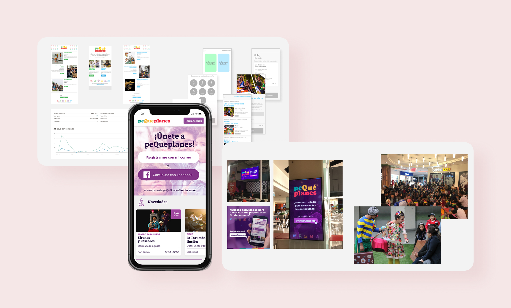
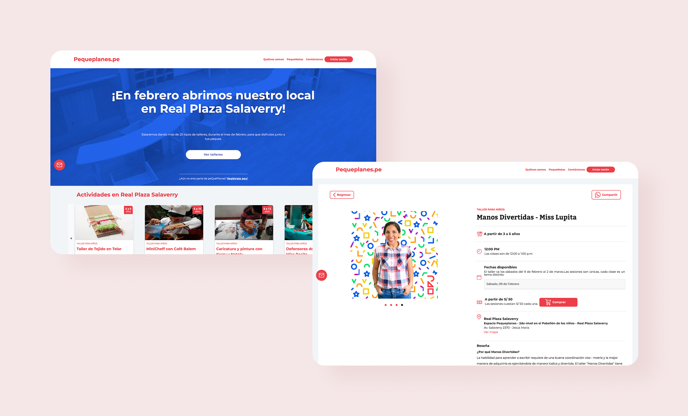

§ tl;dr
Real Plaza wanted to understand the families visiting its malls and explore new services to offer them. I led the design of Pequeplanes, a service helping parents discover curated activities for their kids, which evolved from a weekly newsletter, to a mobile web platform, to a flexible physical venue inside the mall hosting everything from robotics to yoga. This was my first interaction design role, and the project I learned service thinking on.
01 context
Real Plaza, Peru's largest shopping-center network, had a blind spot: it didn't really understand the people visiting its malls, and wanted an initiative to explore future products and services. We started with the data, analyzing the neighborhoods around their largest mall, and found that a quarter of households had children under 10. Betting that families were the most frequent visitors, we focused the entire effort on that segment.
02 the interesting decision
Start with a newsletter, not a product
The parents' problem was clear: every weekend they hunted for activities to do with their kids, but information about family events in Lima was scattered everywhere, with no single place organizing it by location, price, or age group.
The tempting move was to build the platform that obviously needed to exist. Instead, we ran the cheapest possible version of it first, a curated weekly newsletter sent to a user database. It was a product disguised as an experiment: it told us which activities actually got traction, the optimal day and time to deliver content, and what information parents needed before deciding to attend, all before we wrote a line of platform code.
That sequencing, validate demand and content with email, then build; is the decision I'm still proudest of from this project, because it meant every later investment was grounded in real behaviour rather than assumption.
03 what shipped
From inbox, to web, to a built room
The service grew in three deliberate stages, each one earning the right to the next.

Mobile web platform
Built on the newsletter's learnings, with Facebook and email registration so we could start building real user profiles. Low-fidelity testing beforehand told us exactly which data parents would and wouldn't share, we'd probed sensitivity around things like children's ages, and established a categorization system for events that matched how parents actually searched (location, price, age).

The physical space
Research didn't stop at parents. Interviewing activity creators surfaced a bigger opportunity: they badly needed a reliable, dedicated space inside the mall to run workshops. Working with an architect, we designed a multifunctional hub flexible enough to host robotics classes one day and dance the next. I was involved end to end, from concept to final implementation.

Relaunch
For the venue's opening at Real Plaza Salaverry, we rebranded the platform and added self-service onboarding so creators could register themselves, plus exclusive content built for the Pequeplanes community.
04 outcome
Pequeplanes grew from an email experiment into a service operating across three channels: newsletter, web, and a physical venue. Reaching thousands of families and giving activity creators a new way to find an audience. For Real Plaza, it answered the original question: a concrete, validated example of a new service the business could offer, born from actually understanding its visitors.
05 reflection
This was where I learned that design isn't confined to a screen, the most valuable thing we built was a physical room, and it came from talking to a user group (the creators) we hadn't originally set out to serve. If I were doing it now, I'd have defined success metrics for the service up front; we validated demand well at each step, but I'd want to be able to point to retention and engagement numbers, not just reach.